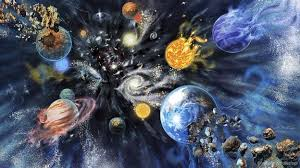

|

Evrenin Sonu Hakkında Teoriler
Evrenin sonu hâlâ kesin olarak bilinmemektedir, ancak bilim insanları farklı senaryolar üzerinde çalışmalar yapmaktadır.
Bu senaryolar, evrenin genişleme hızı, kütle-enerji yoğunluğu ve karanlık enerji gibi faktörlere bağlıdır. En yaygın teorilerden
biri Büyük Donma’dır. Bu senaryoya göre evren genişlemeye devam edecek, yıldızlar yakıtlarını tüketecek ve yeni yıldız oluşumu giderek azalacaktır.
Zamanla evren soğuyacak, karanlık ve boş bir hâl alacaktır.
Bir diğer olasılık Büyük Çöküş teorisidir. Eğer evrenin kütle-enerji yoğunluğu belirli bir sınırı aşarsa, genişleme duracak ve evren kendi üzerine
çökebilir. Tüm madde ve enerji yoğunlaşarak tek bir noktada birleşir ve evrenin sonu, Büyük Patlama’nın tersine bir tekillik olur.
Büyük Yırtılma senaryosunda ise evrenin genişlemesi karanlık enerji etkisiyle giderek hızlanır ve galaksiler, yıldızlar, gezegenler hatta atomlar
bile birbirinden kopar. Evren parçalanarak yok olur ve fiziksel yapılar çöker.
Bazı teorilere göre ise evren döngüsel bir yapıya sahiptir. Bu modele göre evren genişler, sonra büzülür ve bu süreç defalarca tekrarlanır. Büyük
Patlama ve Büyük Çöküş döngüsel bir şekilde evrenin başlangıcı ve sonunu oluşturur.
Günümüzde yapılan gözlemler, evrenin hızla genişlemekte olduğunu ve bu genişlemenin yavaşlamayacağını göstermektedir. Bu nedenle Büyük Donma senaryosu,
diğer teorilere göre daha olası görülmektedir. Evrenin geleceği, yıldızların sönmesi, galaksilerin birbirinden uzaklaşması ve karanlık, soğuk bir
ortamın hâkim olması şeklinde öngörülmektedir.
|